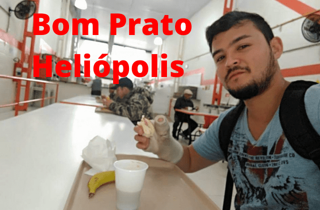

Fábrica de Felicidade - 2022
Causas Sociais
Por Shin emCausas Sociais da Fábrica de Felicidade
Hoje temos 11 causas sociais que foram escolhidas conforme a criticidade na sociedade, nossa identificação com os temas e validando que somos aptos a ajudar.
Lutamos contra as diferenças sociais. Este é um dos motivos para abrirmos mão do nosso lucro dando a liberdade do cliente escolher o quanto pagar. Acreditamos que quem tem mais poder aquisitivo, pagará mais, até porque a felicidade nas classes mais altas realmente custa mais.
E 10% do valor obtido sempre é destinado às nossas causas sociais. Até este momento temos essa porcentagem fixada pois nossa arrecadação ainda está baixíssima. Mas acreditamos em prosperar e em breve conseguirmos ajudar mais pessoas com maiores valores.
Como agimos
Uma das nossas características para atingir os objetivos é não discursar, mas sim sermos o exemplo. Nossas mensagens são passadas de forma sutil e subliminarmente em alguns casos.
Não é dar uma palestra sobre racismo. É colocar uma mulher preta, mãe e pobre à frente da nossa empresa. É empoderar um senhor que mal consegue comunicar-se incentivando-o e mostrando que é possível.
Estudamos com carinho a nossa arrecadação para aproveitarmos da melhor forma ajudarmos em causas sociais da maneira com mais resultados possíveis. Prioritariamente, nós focamos nos invisíveis da sociedade. Pessoas que não têm apoio de ninguém, nenhuma ONG, nenhum governo. Muitos destes são de moradores de rua.
Na nossa primeira experiência, conseguimos arrecadar R$300,00. Mesmo sendo um valor baixo, com os 10% conseguimos transformar em 30 feijoadas para pessoas carentes no Bom Prato Heliópolis. Qualquer limão vira limonada.
Nossas Causas Sociais
Nesta seção serão explicadas as nossas 11 causas sociais que priorizamos neste momento. Futuramente outras ações poderão ser tomadas.
1.Diminuição da Pobreza
Este é um assunto que impacta diretamente e indiretamente várias outras questões sociais, como aumento da criminalidade, falta de saneamento básico, entre outros temas que serão destacados nos tópicos seguintes.
2.Melhorar a Educação
O impacto de pessoas pararem seus estudos devido a extrema pobreza é grande no Brasil. Sem condições dignas para ir à escola, sem alimento na mesa, sem dinheiro para as coisas básicas da casa, muitos precisam largar os estudos para trabalharem. Um dia isso já foi comum, mas hoje estamos em outros tempos.
3.Diminuir a Fome
Também vivenciada pelas pessoas mais pobres. A fome também acarreta em outros problemas, tira a sanidade das pessoas. Quem já passou sabe que o desepero faz agir de formas inimaginaveis e até cometer delitos.
4.Igualdade
Igualdade de gênero, cor, etnia e demais. Não é palestrar, é dar o exemplo. Todos que compõem a Fábrica de Felicidade são ou se identificam com as diferenças. É uma busca silenciosa mas efetiva por equidade.
5.Alerta para Doenças Psicológicas
Interagimos com as pessoas fazendo com que elas mexam-se por instinto de copiar, sem dizer que estão fazendo algo para a saúde delas.
A intenção é agir antes que os problemas psicológicos se agravem e, se possível, antes de serem identificados. O momento pós covid deixou muitos rastros de vazio, tendência a ansiedade e depressão devido ao isolamento social. Então reintegramos os impactados em questões de socialização e atenção à sua saúde.
6.Porder Justo
Novamente com a política do cliente escolher o preço a pagar, damos as mesmas oportunidades de forma equalitária para as empresas, sejam elas micro, pequenas, médias ou grande porte.
7.Humanização
Na Fábrica de Felicidade todos sabemos que empresas não são nada além de pessoas. Então para melhorar as empresas, melhoramos as pessoas. Indiretamente caminhamos para um mundo melhor.
8.Transparência
Somos um livro aberto sobre tudo o que acontece na Fábrica de Felicidade. Damos este exemplo em que todos confiam uns nos outros para ter mais sinergia aos nossos propósitos.
9.Respeito
Não é o jargão "Somos todos iguais". É entender exatamente o oposto: "Somos todos diferentes". Cor, gênero, etnia, opiniões, gostos, times, opções políticas. Cabe a nós entender que cada pessoa é única neste mundo, então o respeito é essencial. Sempre, a todos. Aliás, a todes.
10.Sustentabilidade
Não geramos lixo nas nossas apresentações. Ainda temos a consciência de levar um saco para recolher qualquer coisa que o público venha a descartar, como garrafas pet por exemplo.
11.Gratidão
Estimulamos a gratidão para aumentar o número de pessoas e empresas que façam algo pelo mundo, assim como é a nossa missão. Esta foi a primeira ideia e o que motivou a criação da Fábrica de Felicidade.
Conclusão
Após 7 meses e 2 dias de planejamento, descobrimos que não somos uma empresa com causas sociais. Somos a luta por causas sociais que obtém recursos através da nossa empresa.
Essa descoberta veio a tona quando participamos do evento da maior política pública municipal do mundo para ampliar a conscientização e o engajamento cívico rumo aos Objetivos de Desenvolvimento Sustentável para 2030, A Virada ODS em São Paulo.
Descobrimos que existem 17 causas sociais estipuladas pela ONU e 193 países a serem resolvidas até 2030. Destas, somos intimamente relacionados com mais da metade, 9. Nem neste evento mundial encontramos alguém com o mesmo propósito como o nosso.
Não somos uma ONG. Não somos apoiados por nenhum governo. Não temos nenhum projeto social que nos fornece recursos. Somos pessoas em busca de uma economia ainda inexistente, mas que acreditamos ser uma solução para a humanidade.
Resumindo, a Fábrica de Felicidade é uma engrenagem que impulsiona a busca para um mundo melhor.